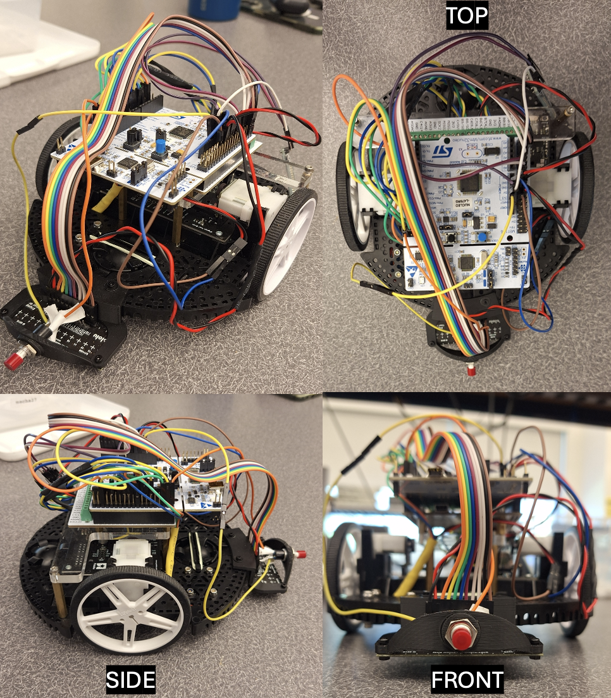
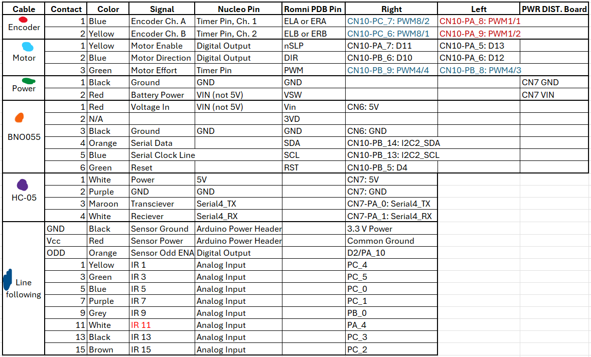
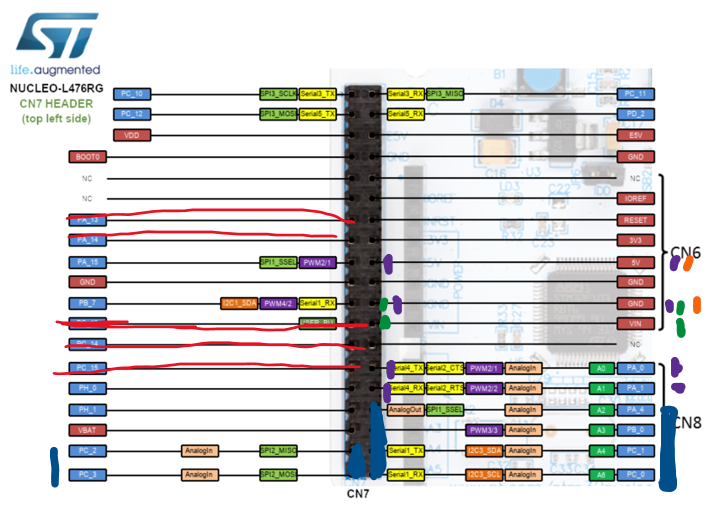
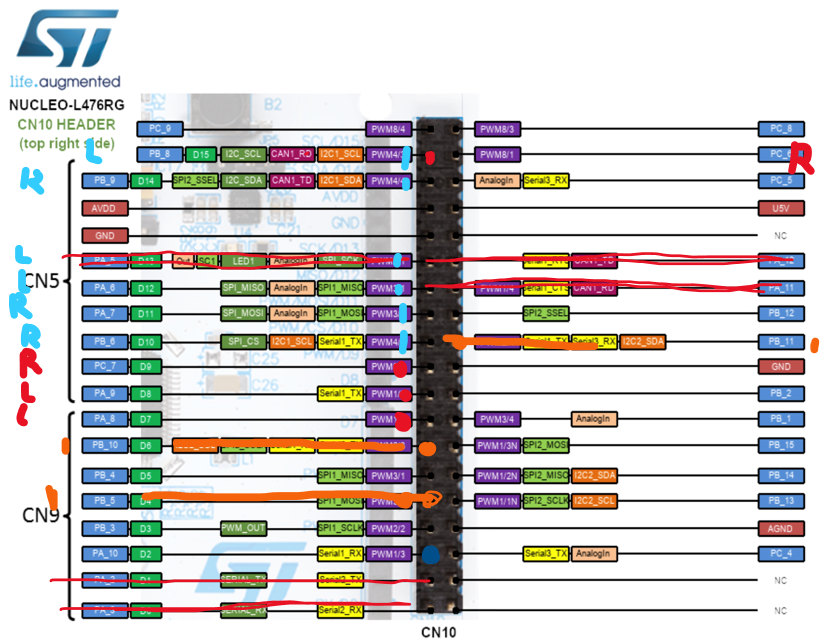
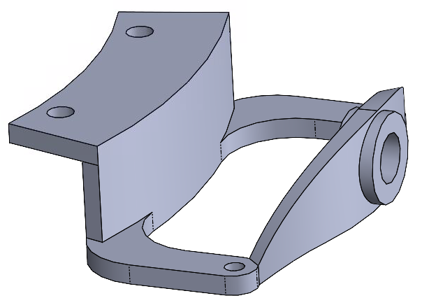

- Generated by
 1.16.1
1.16.1
|
Romi Autonomous Robot - ME 405
Your Go-To Spot for all things Romi!
|
Hello and welcome to our website to recap our work on the Term Project for the ME 405 - Mechatronics Winter 2026 class! Our names' are Pierce Baugher and John Urrutia and we are both graduate students studying under the BioResource and Agricultural Engineering department focusing on agriculture robotics and automation. The information within this page contains descriptions, overview, and explanations to our design for our Romi robot to complete the term project for this class.
If you have any questions, feel free to contact us! Pierce: pbaug.nosp@m.her@.nosp@m.calpo.nosp@m.ly.e.nosp@m.du John: jjmon.nosp@m.tel@.nosp@m.calpo.nosp@m.ly.e.nosp@m.du
This year's ME 405 term project centered around the construction of "Romi", a small robot kit by Polulu. The computer controlling Romi is a STM32 NUCLEO-L476RG, with an additional power distribution board to provide safe power. The purpose was to gain hands on experience with wiring motors and sensors, creating structured and adaptable code with the goal of creating a reliable closed feedback system that would be tested on a playing field.

| Name | Description | Quantity |
|---|---|---|
| Nucleo | STM32 Nucleo L476RG | x 1 |
| Shoe of Brian | Micropython Interpreter | x 1 |
| BNO055 | 9-DOF Absolute Orientation Sensor | x 1 |
| QTRX-MD-08A | Line Following Sensor | x 1 |
| HC-05 BT Module | Bluetooth Module for Remote Communication | x 1 |
| 32U4 Board | Romi 32U4 Control Board | x 2 |
| Base Plate | Romi Chasis Base Plate | x 1 |
| Gear Motors | 120:1 Mini Plastic Gear Motors | x 2 |
| Quadrature Encoders | 12 counts per revolution magnetic encoders | x 2 |
| Motor Clip | Romi Chasis Motor Clips | x 2 |
| Wheels | Polulu Wheel 70 x 8 mm | x 2 |
| Ball Casters | Romi Chasis Ball Casters | x 2 |
| Batteries | 6 Rechargeable AA Batteries | x 6 |
| Button | Bump Switch for object detection | x 1 |



The full source code and project files can be found on our GitHub Repository
All control runs inside a cooperative round-robin scheduler from the cotask library (courtesy of Dr. JR Ridgley) Detailed explanations about each files purpose can be found in the SRC File Descriptions Six tasks share states, tuning variables, and more through Share and Queue objects:
The observer tracks four state variables:
Update law: x_{k+1} = AD * x_k + BD * u*_k
Encoder positions, BNO055 heading and yaw rate, and motor effort values are used in the state estimation to do corrective predictions based on both the kinematics and physics of the Romi robot. Note: X and Y absolute positions are not included in the state estimation and are instead found through outside means (instantaneous velocity conversions over time).
Line following is accomplished using a front mounted QTR-8A IR sensor that does dynamic thresholding from sensor readings and calculates a centroid position in mm from the sensor center. A PID controller (Kp=6.0, Ki=0.7, Kd=0.9) converts this error into a steering correction that is sent to both motors for adaptive speed setpoints. Below is an example of a one sensor reading, and how it is manipulated to find where the centroid of the line is. It is important to note that our "0" mm is equal to being directly over the first sensor, and our sensor spacing was 8mm.
| Initial sensor readings (1-8) | 5500 | 54000 | 49000 | 43000 | 41000 | 48000 | 52000 | 56000 |
|---|---|---|---|---|---|---|---|---|
| Subtracted Min. | 14000 | 13000 | 8000 | 2000 | 0000 | 7000 | 11000 | 15000 |
| Divided BY Range | 0.93 | 0.86 | 0.53 | 0.13 | 0 | 0.46 | 0.73 | 1 |
| Inverted Strength | 0.07 | 0.14 | 0.47 | 0.87 | 1 | 0.54 | 0.27 | 0 |
$$ \frac{0.07 \times 0 + 0.14 \times 8 + 0.47 \times 16 + 0.87 \times 24 + 1 \times 32 + 0.54 \times 40 + 0.27 \times 48 + 0 \times 56}{0.07 + 0.14 + 0.47 + 0.87 + 1 + 0.54 + 0.27 + 0} \approx 29.595 \, \text{mm} $$
Our Romi also has a front mounted button used for object detection. One of the pins (C8) is set up as a pull down input pin and is set high whenever the button is pressed and an object is detected. In reference to the game track, this tells Romi that the wall has been reached and to move backwards. This same process could be followed for more bump detection (buttons) attached, however our Romi only uses the 1 front mounted button.
This is an image from our CAD that combines both our bump sensor mount (a button), and our Polulu line following sensor (QTRX-MD-08A)

See the robot complete a full lap here
The robot successfully navigated the course. Key lessons learned throughout this course/project: